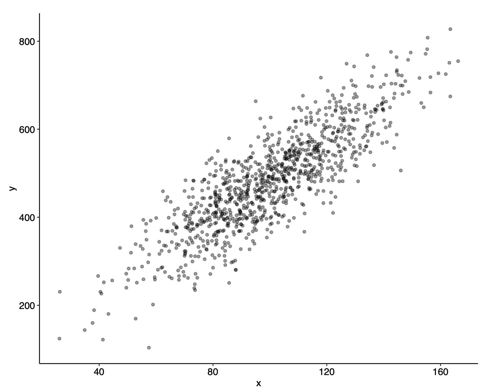
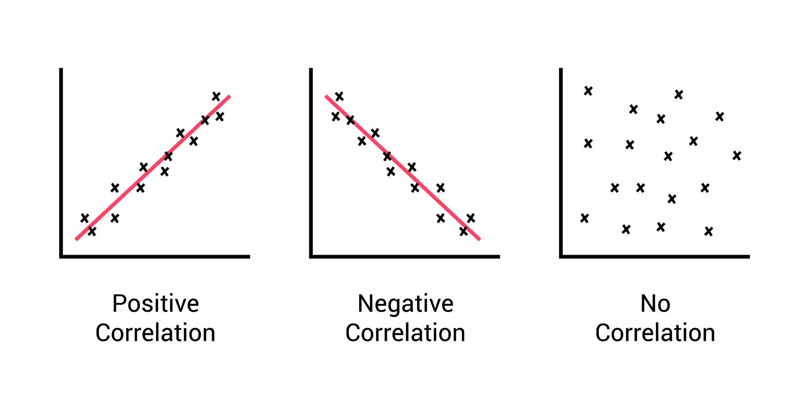
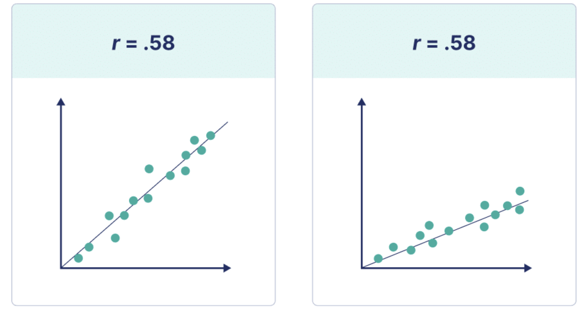
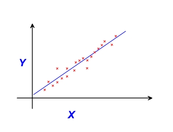

This lesson covers the following topics:
- How variables can be related/correlated with each other.
- How we can quantify correlations with covariance and correlation coefficients
- How we might care about the magnitude of correlations, rather than the strength of correlations
1.3.1: Relationships Between Variables
In the previous lesson, we talked a lot about estimating the average value of some variable in a population.
However, that is not the only thing we can estimate - we can also estimate the relationship between variables in a population.
In fact, relationships is what we are primarily concerned about as social scientists. This is because a lot of the questions we want to answer with social science are relationships between variables.
- How does the education level of an individual affect an individual’s income?
- How does inflation levels within a country affect the popularity of the incumbent administration?
- Do proportional representation systems increase turnout of individuals?
- Are less educated citizens more hostile to immigrants?
Thus, for the rest of this course, we will be focusing on how we characterise the relationships between different variables of the world.
We describe relationships between variables as correlations.
The correlation between two variables x and y, are the extent to which they occur together in the real world.
- If we are more likely to observe higher values of y when higher values of x are present, that means we have a positive correlation between x and y.
- If we are more likely to observe lower values of y when higher values of x are present, that means we have a negative correlation between x and y.
- If the likelihood of observing y does not change no matter the value of x, then the two variables x and y are uncorrelated.
Our goal in statistics and econometrics is to quantify these relationships between variables - to assign numerical values to these variables.
An important warning on interpretation and terminology:
Note how I have been using the word relationship and correlation to describe the relationship between two variables x and y.
I have not been using the word causation or causal effect.
This is because correlation is not causation!
This course will only really focus on correlations and relationships, not causation.
- If you are interested in causation, after you finish this course on statistical and econometric theory, you can move onto the course Applied Econometric Methods, which takes these theories to create research designs to distinguish correlation and causation.
1.3.2: Correlations Between Variables
As we mentioned before, correlations are the following:
The correlation between two variables x and y, are the extent to which they occur together in the real world.
- If we are more likely to observe higher values of y when higher values of x are present, that means we have a positive correlation between x and y.
- If we are more likely to observe lower values of y when higher values of x are present, that means we have a negative correlation between x and y.
- If the likelihood of observing y does not change no matter the value of x, then the two variables x and y are uncorrelated.
In order to talk about correlation, there are two factors that must be met:
- There has to be a comparison - high x vs. low x, and how that related to high y and low y. This is often expressed by words like more, more likely, less, less likely.
- Both x and y must have some variation.
If these criteria are not met, we only have facts, not correlation.
For example, take these statements, and see if they are correlations or just facts:
Old People Take Vitamins
- This is not a correlation, just a fact. You have to have a comparison - “Old People” is not a comparison.
- To turn this into a correlation, we could say that older people, compared to younger people, are morelikely to take vitamins.
Successful People Work Hard
- This is not a correlation, just a fact. You have to have a comparison - “Successful people” is not a comparison.
- To turn this into a correlation, we could say that more successful people, compared to less successful people, work harder.
Cities with More Crime Hire More Police Officers
- This is a correlation. We can tell there is a comparison, with the word more, which indicate a comparison.
1.3.3: Graphical Representation of Correlations
How can we illustrate the correlation between variables.
One popular way is to use scatter-plots.
- Scatter-plots have one variable along the x-axis, and one variable along the y-axis.
- We then plot our data points (x_i, y_i) in the graph.
- We can generally see if our variables are related if there is a pattern in the scatter-plot.
For example, below is a scatter plot, with variable x on the x-axis, and variable y on the y-axis.

We can use scatter-plots to determine the direction of correlations. Remember that:
- If we are more likely to observe higher values of y when higher values of x are present, that means we have a positive correlation between x and y.
- If we are more likely to observe lower values of y when higher values of x are present, that means we have a negative correlation between x and y.
- If the likelihood of observing y does not change no matter the value of x, then the two variables x and y are uncorrelated.
In graphical form, these types of correlations look like this:

1.3.4: Quantifying Relationships with Covariance
Often, we can tell a correlation just by plotting it in a scatter-plot. However, there are some times where we would like a numerical value to summarises the correlation.
We can use the concept of covariance to measure this.
Covariance measures how much two variables x and y vary together. Formally, covariance is calculated as follows:
\begin{split} Cov(x,y) & = E((x_i - \bar{x})(y_i - \bar y)) \\ & = \frac{1}{n}\sum\limits_{i=1}^n[(x_i - \bar x)(y_i - \bar y)] \end{split}
- Where (x_i, y_i) is one data point in our data.
- Where \bar x and \bar y are the average x and y values in our data.
- Where n is the total number of data points we have in our data.
Why is that the formula of covariance?
Well, take some random data point within our data (x_i, y_i).
If x_i is above the mean while y_i is above the mean, the covariance will be positive. Similarly, if x_i is below the mean while y_i is below the mean, the covariance will also be positive (because both variables move in the same direction together).
If x_i is above the mean while y_i is below the mean, or if x_i is below the mean while y_i is above the mean, the covariance will be negative (because both variables move in opposite directions).
This makes sense if we look back at our definitions of correlation.
If x is lower while y is lower, and x is higher while y is higher, we have a positive correlation. This matches the sign of the covariance.
If x is lower while y is higher, and x is higher while y is lower, we have a negative correlation. This matches the sign of the covariance.
Thus, we can interpret the sign of the covariance:
If the covariance is positive, there is a positive relationship between x and y.
If the covariance is negative, there is a negative relationship between x and y.
If the covariance is zero, then there is no relationship between x and y.
However, the downside of covariance is that the actual number does not mean much.
- We can only interpret the sign of the covariance.
- We cannot interpret the actual value of the covariance.
Why is this the case? For example, let us say we are measuring the covariance of height with income.
- Let us say we measure the covariance twice. First time, we use height in feet. Second time, we use height in inches.
- We will get different covariance values, since (x_i - \bar x) will have a different magnitude. For example, if \bar{x} is 6 feet (72 inches), and x_i is 6.5 feet (78 inches), the (x_i - \bar x) would be 0.5 feet or 6 inches. That means for inches, we will get a higher value for covariance.
- However, getting different covariances makes no sense - we are still comparing the exact same variables, we just changed the units of one. Just because we measured in inches instead of feet, the relationship between height and income should not change.
This weakness of covariance is why there is another way to measure correlations - the correlation coefficient, described in the next section.
1.3.5: Correlation Coefficients and Strength of Correlations
Like we mentioned in the last section, covariances cannot be interpreted for their actual values, since changing the units will affect the covariance.
However, we can adjust covariances slightly to interpret their numbers - we can divide the covariance by the standard deviation of both x and y (square root of variances).
- Why does this work? Well, let us go back to the height in feet or inches example.
- This difference in units would change our covariances, as we discussed before. For example, inches would have a higher covariance, simply because inches have the larger values (12 inches is one feet)
- However, if we divide by the standard deviation, this gets rid of the differences. This is because the standard deviation is also measured in the units (feet or inches), and adjusts to the units. For example, perhaps our standard deviation is 12 inches, which is one feet. Dividing by the standard deviation will thus cancel out the effect of units on covariance.
- By dividing by the standard deviation, we get rid of the effect of units.
By doing this adjustment, we get the correlation coefficient:
The correlation coefficient is the covariance adjusted by the standard deviations (square root of variance) of the variables in question. Mathematically:
Corr(x, y) =r = \frac{Cov(x, y)}{\sqrt{Var(x)Var(y)}}
- Where Cov(x,y) is the covariance between x and y (discussed in the last section)
- Where Var(x) is the variance of x, and Var(y) is the variance of y (discussed in 1.1.5)
Note: we often use r to notate the correlation coefficient.
By doing this normalisation procedure, units no longer matter, and we can compare all relationships with a single value.
The correlation coefficient is always between -1 and 1. We can also interpret the magnitudes now.
Negative correlation coefficients mean a negative correlation, and positive correlation coefficients mean a positive correlation.
The magnitude is also interpretable.
- The closer the correlation coefficient is to -1 or 1, the “stronger” the correlation. If the correlation is exactly 1, that means all points are in a perfect straight line.
- The closer the correlation coefficient is to 0, the “weaker” the correlation. If the correlation is eactly 0, that means there is no relationship between the variables
What do I mean by a “strong” or “weak” correlation. It is easier to showcase with a graph:

We can see here that stronger correlations mean that the points fit closer to a straight line, while a weaker correlations mean the opposite.
1.3.6: Magnitude of Relationships with Best-Fit Lines
So far, we have focused on the strength of correlations - how closely they fit to a line.
But is this actually that important for us as social scientists?
- We do not really care how closely two variables are correlated (how closely they are to a straight line)
- Instead, we care about the magnitude of the relationship.
For example, we don’t really care about how closely the relationship between Education and income are to a straight line. We care about how much an increase in one year of education is related to a certain value increase of an individual’s income.
For example, to better illustrate this, the figure below has all medium-strong correlated relationships with the same correlation coefficients r=0.58. However, they have very different effects (steepness of the best-fit line).

So, what is a better, alternative way, to describe the relationships between variables that incorporates the idea of magnitude?
One way to explore the relationship is with a best-fit line. A best-fit line is useful, since the slope of the best-fit line represents the change in y for every unit change in x.

In the figure above, we have plotted a number of observations, and implemented a best-fit line in blue. The graph here introduces some common terminology:
- The independent variable, also called the explanatory variable or treatment variable, is the variable that we believe is doing the causing. It is typically notated x.
- The dependent variable, also called the response variable or outcome variable, is the variable that is affected by a change in the independent variable. The dependent variable is typically notated with y.
We know from algebra that a linear equation takes the form y=mx+b. The slope m describes the rate of change of y for a one unit change in x.
- Thus, the slope is a measurement of the relationship between x and y.
Thus, if we can fit a best-fit line to our data, we can look at the slope, and determine the relationship between x and y.
Note how I have been using the word relationship, not causal effect.
Causality is not established through estimators, it is established through a strong experimental design (which we will cover in the subsequent Applied Econometric Methods course).
We will spend most of the rest of this course discussing how to estimate these best-fit lines, using different estimators, and discussing their benefits and drawbacks.